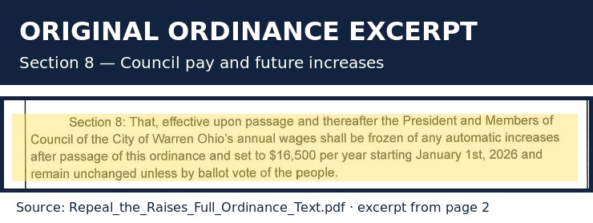

News, public records & resident response
The Forever Raise Loophole
Review the coverage, read the ordinance, and check the claims for yourself.
← Back to the campaign Prepare an ethics-review requestLocal TV coverage
WFMJ & WKBN reports
These links are provided for residents who want to review the reporting and the public discussion around the November 3, 2026 ballot issue. News organizations retain all rights to their reporting and video.
WKBN report
“Warren voters to decide whether to repeal council pay raises.” This is a syndicated copy of the WKBN report.
Read the WKBN report WKBN video/news hubWFMJ coverage
WFMJ’s report covers the push to stop Warren City Council pay raises and the ballot initiative.
Read the WFMJ reportLinks open the original station report or a syndicated copy hosted by the publisher.
Primary source
What the original ordinance excerpt says
Section 8 of the citizen initiative says that the President and Members of Council’s annual wages would be set at $16,500 starting January 1, 2026, with automatic increases frozen unless changed by a ballot vote of the people.

Highlighted excerpt prepared from the scanned two-page PDF. It is not a substitute for the complete document.
Read the complete original ordinance PDF Read the web transcriptionRebuttal & context
A claim-by-claim response
This page responds to statements attributed to Councilman Greg Greathouse about union competitiveness. It addresses the substance of the argument; it does not claim to determine anyone’s intent or make a legal finding.
Claim: the repeal would make Warren less competitive because it would affect union pay.
That claim does not match the text of the initiative. The measure applies to elected City officials and expressly does not rewrite collective-bargaining agreements. Union wages and elected-official salaries are separate legal and negotiating questions.
What the record shows
- The ordinance excerpt above addresses the President and Members of Council.
- The ballot language says future changes to elected-official salaries require voter approval.
- The campaign’s position is that union competitiveness should be addressed through transparent bargaining, job-market data, and negotiated contracts—not by tying council compensation to another employee’s pay.
Bottom line
Residents can disagree about the proper pay level for public employees and elected officials. But the “union competitiveness” argument should not be used to describe a change the ballot measure does not make. Voters should compare the claim with the ordinance and the ballot text.
Sources: full ballot-language transcription, scanned ordinance PDF, and the City of Warren Council page.
Independent review
Prepare information for the Ohio Ethics Commission
Use this form to organize your notes. The button copies a plain-text summary so you can keep it for your records or read it to the investigator. This page does not determine that an ethics violation occurred.